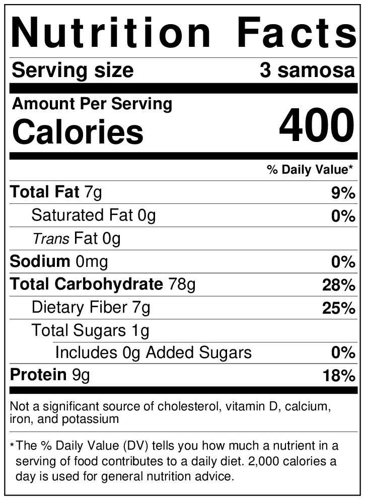

Samosa recipe

Samosas with two different chutney (dips)
- A samosa is a fried or baked pastry with a savory filling, including ingredients such as spiced potatoes, onions, and peas.
- It may take different forms, including triangular, cone, or half-moon shapes, depending on the region. Samosas are often accompanied by chutney, and have origins in medieval times or earlier.
Ingredients
- Medium potatoes 500-550 grams
- Tablespoons oil
- 1 teaspoon cumin seeds
- 1 teaspoon fennel seeds
- Teaspoons crushed coriander seeds
- 1 teaspoon finely chopped ginger
- 1 green chili chopped
- 1/4 teaspoon hing asafoetida
- 1/2 cup +2 tablespoons green peas I used frozen green peas which I soaked in warm water for 10-15 minutes before using
- 1 teaspoon coriander powder
- 1/2 teaspoon garam masala
- 1/2 teaspoon amchur dried mango powder
- 1/4 teaspoon red chili powder or add more to taste
- 3/4 teaspoon salt or to taste
Procedure
- By making the samosa dough. To a large bowl, add flour, ajwain (carom seeds), salt and mix well.
- Add the oil and then start mixing with your fingers. Rub the flour with the oil until the oil is well incorporated in all of the flour. Do this for 3 to 4 minutes, you don't want to rush this step. Once incorporated, the mixture resembles crumbs.
- Some flour between your palm- it should form a shape (& not crumble) - means oil is enough and well incorporated.
- Now, start adding water, little by little and mix to form a stiff dough. Don't overwork the dough and don't knead a soft dough. It should just come together and form a stiff dough. I used around 6 tablespoons of water here.
- Cover the dough with a moist cloth and let it rest for 40 minutes. I usually soak a paper towel in water and then squeeze out all the water and then cover my dough with that. While the dough is resting, start working on the filling.
Nutritional content

Click here to return to index
Click here to return to Snacks
Click here to return to go Breakfast